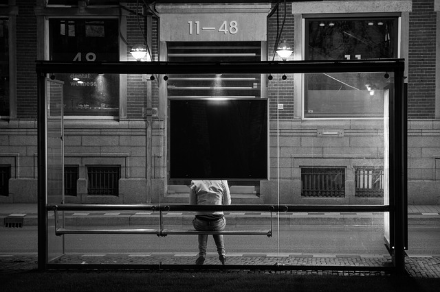

A project about the nature of departure and arrival and the projection of presence in transition.
A project about DAYDREAMING at a BUS STOP while IN TRANSIT.
Each image of a shadow shown in this program represents a
time period of waiting in the bus stop. Shadows were chosen to represent
a dream-like quality in a space where waiting prompts daydreaming. Although these daydreams are derived from real concepts,
they may be recreated by the mind in an unrealistic manner as it tangles itself with more subconscious thoughts.
 Therefore when the button is pressed in the second state and a recreation of the daydream is prompted, that
illustrated vignette of waiting is seen and understood in layers.
Therefore when the button is pressed in the second state and a recreation of the daydream is prompted, that
illustrated vignette of waiting is seen and understood in layers.